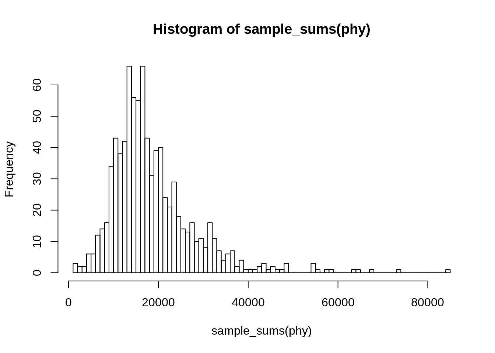
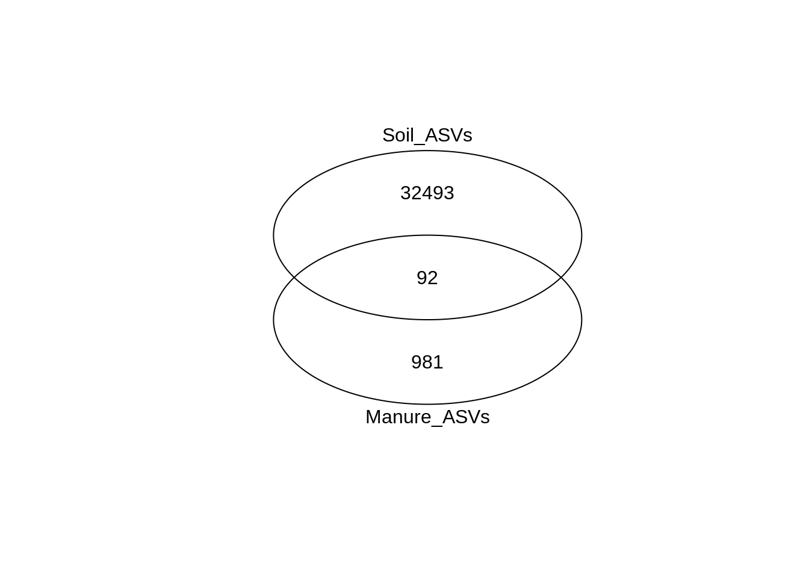
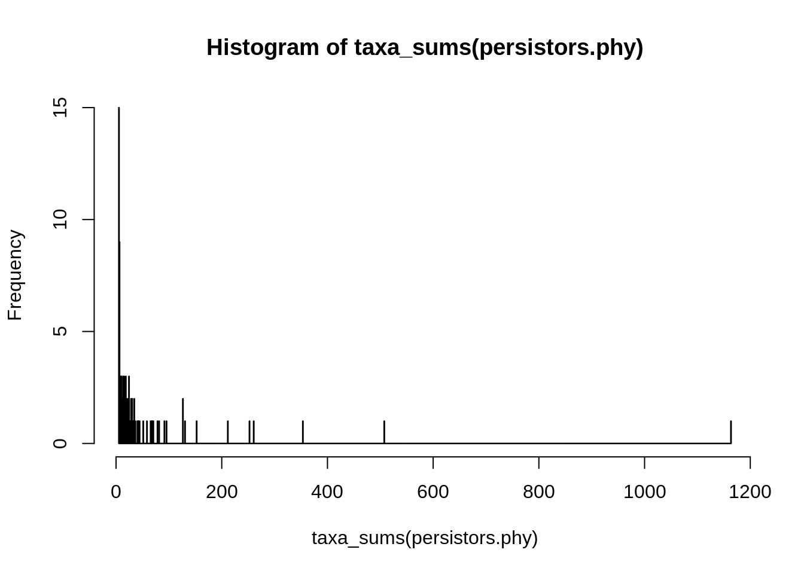
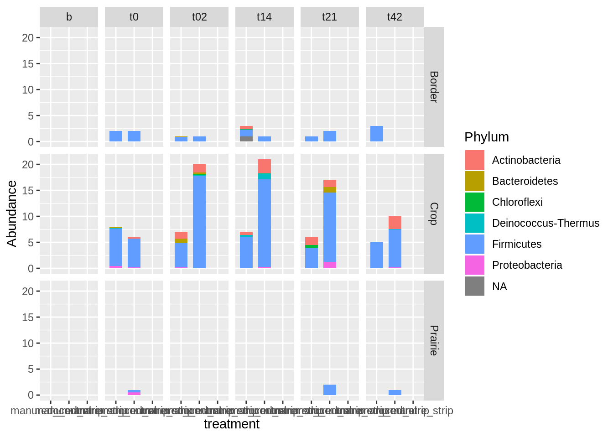
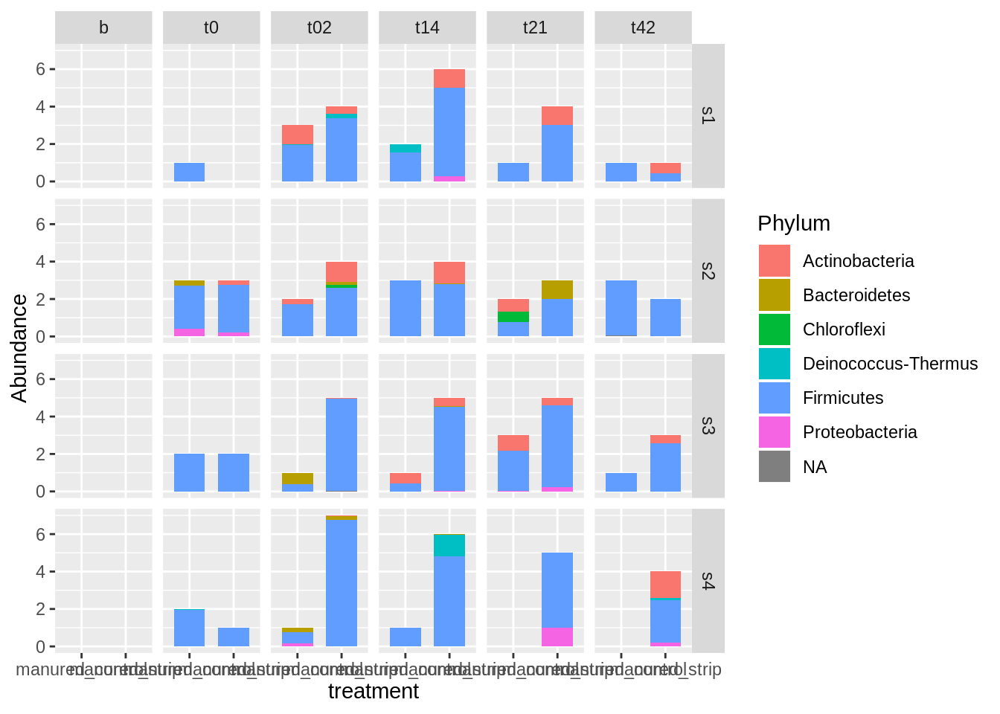

# source functions
source("code/functions.R")phy <- readRDS("./data/RDS/worle_with_meta.RDS")
colnames(sample_data(phy))## [1] "id" "PI" "matrix"
## [4] "plot" "treatment" "day"
## [7] "depth" "in_plot_location" "block"
## [10] "runoff_sample"unique(phy@sam_data$day)## [1] "0" "b" "t0" "t14" "t2" "t21" "t42"data <- data.frame(sample_data(phy)) %>%
filter(matrix == "soil") %>%
mutate(Vegetation = case_when(in_plot_location %in% c("s1", "s2", "s3", "s4") ~ "Crop",
in_plot_location %in% c("s6", "s7", "s8", "s9") ~ "Prairie",
TRUE ~ "Border"))
all_data <- data.frame(sample_data(phy)) %>%
full_join(data)## Joining, by = c("id", "PI", "matrix", "plot", "treatment", "day", "depth", "in_plot_location", "block", "runoff_sample")all_data <- all_data %>%
mutate(day = replace(day, day == 't2', "t02"))
sample_names(phy)## [1] "Comp-from-P8-7-10-26-17" "P1-1"
## [3] "P1-3" "P1-5"
## [5] "P1-s1-d1-b" "P1-s1-d1-t0"
## [7] "P1-s1-d1-t14" "P1-s1-d1-t2"
## [9] "P1-s1-d2-t2" "P1-s1-d1-t21"
## [11] "P1-s1-d1-t42" "P1-s1-d2-b"
## [13] "P1-s1-d2-t0" "P1-s1-d2-t14"
## [15] "P1-s1-d2-t21" "P1-s1-d2-t42"
## [17] "P1-s2-d1-b" "P1-s2-d1-t0"
## [19] "P1-s2-d1-t14" "P1-s2-d1-t2"
## [21] "P1-s2-d2-t2" "P1-s2-d1-t21"
## [23] "P1-s2-d2-b" "P1-s2-d2-t0"
## [25] "P1-s2-d2-t14" "P1-s2-d2-t21"
## [27] "P1-s2-d2-t42" "P1-s3-d1-b"
## [29] "P1-s3-d1-t0" "P1-s3-d1-t14"
## [31] "P1-s3-d1-t2" "P1-s3-d2-t2"
## [33] "P1-s3-d1-t21" "P1-s3-d1-t42"
## [35] "P1-s3-d2-b" "P1-s3-d2-t0"
## [37] "P1-s3-d2-t14" "P1-s3-d2-t21"
## [39] "P1-s3-d2-t42" "P1-s4-d1-b"
## [41] "P1-s4-d1-t0" "P1-s4-d1-t14"
## [43] "P1-s4-d1-t2" "P1-s4-d2-t2"
## [45] "P1-s4-d1-t21" "P1-s4-d1-t42"
## [47] "P1-s4-d2-b" "P1-s4-d2-t0"
## [49] "P1-s4-d2-t14" "P1-s4-d2-t21"
## [51] "P1-s4-d2-t42" "P1-s5-d1-b"
## [53] "P1-s5-d1-t0" "P1-s5-d1-t14"
## [55] "P1-s5-d1-t2" "P1-s5-d1-t21"
## [57] "P1-s5-d1-t42" "P1-s5-d2-b"
## [59] "P1-s5-d2-t0" "P1-s5-d2-t14"
## [61] "P1-s5-d2-t2" "P1-s5-d2-t21"
## [63] "P1-s5-d2-t42" "P1-s6-d1-b"
## [65] "P1-s6-d1-t0" "P1-s6-d1-t14"
## [67] "P1-s6-d1-t2" "P1-s6-d1-t21"
## [69] "P1-s6-d1-t42" "P1-s6-d2-b"
## [71] "P1-s6-d2-t0" "P1-s6-d2-t14"
## [73] "P1-s6-d2-t2" "P1-s6-d2-t21"
## [75] "P1-s6-d2-t42" "P1-s7-d1-b"
## [77] "P1-s7-d1-t0" "P1-s7-d1-t14"
## [79] "P1-s7-d1-t2" "P1-s7-d1-t42"
## [81] "P1-s7-d2-b" "P1-s7-d2-t0"
## [83] "P1-s7-d2-t14" "P1-s7-d2-t2"
## [85] "P1-s7-d2-t21" "P1-s7-d2-t42"
## [87] "P1-s8-d1-b" "P1-s8-d1-t0"
## [89] "P1-s8-d1-t14" "P1-s8-d1-t2"
## [91] "P1-s8-d1-t21" "P1-s8-d1-t42"
## [93] "P1-s8-d2-b" "P1-s8-d2-t0"
## [95] "P1-s8-d2-t14" "P1-s8-d2-t2"
## [97] "P1-s8-d2-t21" "P1-s8-d2-t42"
## [99] "P1-s9-d1-b" "P1-s9-d1-t0"
## [101] "P1-s9-d1-t14" "P1-s9-d1-t2"
## [103] "P1-s9-d1-t21" "P1-s9-d1-t42"
## [105] "P1-s9-d2-b" "P1-s9-d2-t0"
## [107] "P1-s9-d2-t14" "P1-s9-d2-t2"
## [109] "P1-s9-d2-t21" "P1-s9-d2-t42"
## [111] "P2-1" "P2-2"
## [113] "P2-3" "P2-4"
## [115] "P2-5" "P2-6"
## [117] "P2-s1-d1-b" "P2-s1-d1-t0"
## [119] "P2-s1-d1-t14" "P2-s1-d1-t2"
## [121] "P2-s1-d1-t21" "P2-s1-d1-t42"
## [123] "P2-s1-d2-b" "P2-s1-d2-t0"
## [125] "P2-s1-d2-t14" "P2-s1-d2-t2"
## [127] "P2-s1-d2-t21" "P2-s1-d2-t42"
## [129] "P2-s2-d1-b" "P2-s2-d1-t0"
## [131] "P2-s2-d1-t14" "P2-s2-d1-t2"
## [133] "P2-s2-d1-t21" "P2-s2-d1-t42"
## [135] "P2-s2-d2-b" "P2-s2-d2-t0"
## [137] "P2-s2-d2-t14" "P2-s2-d2-t2"
## [139] "P2-s2-d2-t21" "P2-s2-d2-t42"
## [141] "P2-s3-d1-b" "P2-s3-d1-t0"
## [143] "P2-s3-d1-t14" "P2-s3-d1-t2"
## [145] "P2-s3-d1-t21" "P2-s3-d2-b"
## [147] "P2-s3-d2-t0" "P2-s3-d2-t14"
## [149] "P2-s3-d2-t2" "P2-s3-d2-t21"
## [151] "P2-s3-d2-t42" "P2-s4-d1-b"
## [153] "P2-s4-d1-t0" "P2-s4-d1-t14"
## [155] "P2-s4-d1-t2" "P2-s4-d1-t21"
## [157] "P2-s4-d1-t42" "P2-s4-d2-b"
## [159] "P2-s4-d2-t0" "P2-s4-d2-t14"
## [161] "P2-s4-d2-t2" "P2-s4-d2-t21"
## [163] "P2-s4-d2-t42" "P2-s5-d1-b"
## [165] "P2-s5-d1-t0" "P2-s5-d1-t14"
## [167] "P2-s5-d1-t2" "P2-s5-d1-t21"
## [169] "P2-s5-d1-t42" "P2-s5-d2-b"
## [171] "P2-s5-d2-t0" "P2-s5-d2-t14"
## [173] "P2-s5-d2-t2" "P2-s5-d2-t21"
## [175] "P2-s5-d2-t42" "P2-s6-d1-b"
## [177] "P2-s6-d1-t0" "P2-s6-d1-t14"
## [179] "P2-s6-d1-t2" "P2-s6-d1-t21"
## [181] "P2-s6-d1-t42" "P2-s6-d2-b"
## [183] "P2-s6-d2-t0" "P2-s6-d2-t14"
## [185] "P2-s6-d2-t2" "P2-s6-d2-t21"
## [187] "P2-s6-d2-t42" "P2-s7-d1-b"
## [189] "P2-s7-d1-t0" "P2-s7-d1-t14"
## [191] "P2-s7-d1-t2" "P2-s7-d1-t21"
## [193] "P2-s7-d1-t42" "P2-s7-d2-b"
## [195] "P2-s7-d2-t0" "P2-s7-d2-t14"
## [197] "P2-s7-d2-t2" "P2-s7-d2-t21"
## [199] "P2-s7-d2-t42" "P2-s8-d1-b"
## [201] "P2-s8-d1-t0" "P2-s8-d1-t14"
## [203] "P2-s8-d1-t2" "P2-s8-d1-t21"
## [205] "P2-s8-d1-t42" "P2-s8-d2-b"
## [207] "P2-s8-d2-t0" "P2-s8-d2-t14"
## [209] "P2-s8-d2-t2" "P2-s8-d2-t21"
## [211] "P2-s8-d2-t42" "P2-s9-d1-b"
## [213] "P2-s9-d1-t0" "P2-s9-d1-t14"
## [215] "P2-s9-d1-t2" "P2-s9-d1-t21"
## [217] "P2-s9-d2-b" "P2-s9-d2-t0"
## [219] "P2-s9-d2-t14" "P2-s9-d2-t2"
## [221] "P2-s9-d2-t21" "P2-s9-d2-t42"
## [223] "P3-1" "P3-2"
## [225] "P3-3" "P3-4"
## [227] "P3-5" "P3-6"
## [229] "P3-s1-d1-b" "P3-s1-d1-t0"
## [231] "P3-s1-d1-t14" "P3-s1-d1-t21"
## [233] "P3-s1-d1-t42" "P3-s1-d2-b"
## [235] "P3-s1-d2-t0" "P3-s1-d2-t14"
## [237] "P3-s1-d2-t2" "P3-s1-d2-t21"
## [239] "P3-s1-d2-t42" "P3-s2-d1-b"
## [241] "P3-s2-d1-t0" "P3-s2-d1-t14"
## [243] "P3-s2-d1-t2" "P3-s2-d1-t21"
## [245] "P3-s2-d1-t42" "P3-s2-d2-b"
## [247] "P3-s2-d2-t0" "P3-s2-d2-t14"
## [249] "P3-s2-d2-t2" "P3-s2-d2-t21"
## [251] "P3-s2-d2-t42" "P3-s3-d1-b"
## [253] "P3-s3-d1-t0" "P3-s3-d1-t14"
## [255] "P3-s3-d1-t2" "P3-s3-d1-t21"
## [257] "P3-s3-d1-t42" "P3-s3-d2-b"
## [259] "P3-s3-d2-t0" "P3-s3-d2-t14"
## [261] "P3-s3-d2-t2" "P3-s3-d2-t21"
## [263] "P3-s3-d2-t42" "P3-s4-d1-b"
## [265] "P3-s4-d1-t0" "P3-s4-d1-t14"
## [267] "P3-s4-d1-t2" "P3-s4-d1-t21"
## [269] "P3-s4-d1-t42" "P3-s4-d2-b"
## [271] "P3-s4-d2-t0" "P3-s4-d2-t14"
## [273] "P3-s4-d2-t2" "P3-s4-d2-t21"
## [275] "P3-s4-d2-t42" "P3-s5-d1-b"
## [277] "P3-s5-d1-t0" "P3-s5-d1-t14"
## [279] "P3-s5-d1-t2" "P3-s5-d1-t21"
## [281] "P3-s5-d1-t42" "P3-s5-d2-b"
## [283] "P3-s5-d2-t0" "P3-s5-d2-t2"
## [285] "P3-s5-d2-t21" "P3-s5-d2-t42"
## [287] "P3-s6-d1-b" "P3-s6-d1-t0"
## [289] "P3-s6-d1-t14" "P3-s6-d1-t2"
## [291] "P3-s6-d1-t21" "P3-s6-d1-t42"
## [293] "P3-s6-d2-b" "P3-s6-d2-t0"
## [295] "P3-s6-d2-t14" "P3-s6-d2-t2"
## [297] "P3-s6-d2-t21" "P3-s6-d2-t42"
## [299] "P3-s7-d1-b" "P3-s7-d1-t0"
## [301] "P3-s7-d1-t14" "P3-s7-d1-t2"
## [303] "P3-s7-d1-t21" "P3-s7-d1-t42"
## [305] "P3-s7-d2-b" "P3-s7-d2-t0"
## [307] "P3-s7-d2-t14" "P3-s7-d2-t2"
## [309] "P3-s7-d2-t21" "P3-s7-d2-t42"
## [311] "P3-s8-d1-b" "P3-s8-d1-t0"
## [313] "P3-s8-d1-t14" "P3-s8-d1-t2"
## [315] "P3-s8-d1-t21" "P3-s8-d2-b"
## [317] "P3-s8-d2-t0" "P3-s8-d2-t14"
## [319] "P3-s8-d2-t2" "P3-s8-d2-t21"
## [321] "P3-s8-d2-t42" "P3-s9-d1-b"
## [323] "P3-s9-d1-t0" "P3-s9-d1-t14"
## [325] "P3-s9-d1-t2" "P3-s9-d1-t21"
## [327] "P3-s9-d1-t42" "P3-s9-d2-b"
## [329] "P3-s9-d2-t0" "P3-s9-d2-t14"
## [331] "P3-s9-d2-t2" "P3-s9-d2-t21"
## [333] "P3-s9-d2-t42" "P4-1"
## [335] "P4-2" "P4-3"
## [337] "P4-4" "P4-5"
## [339] "P4-6" "P4-s1-d1-b"
## [341] "P4-s1-d1-t0" "P4-s1-d1-t2"
## [343] "P4-s1-d1-t21" "P4-s1-d1-t42"
## [345] "P4-s1-d2-b" "P4-s1-d2-t0"
## [347] "P4-s1-d2-t14" "P4-s1-d2-t2"
## [349] "P4-s1-d2-t21" "P4-s1-d2-t42"
## [351] "P4-s2-d1-b" "P4-s2-d1-t0"
## [353] "P4-s2-d1-t14" "P4-s2-d1-t2"
## [355] "P4-s2-d1-t21" "P4-s2-d1-t42"
## [357] "P4-s2-d2-b" "P4-s2-d2-t0"
## [359] "P4-s2-d2-t14" "P4-s2-d2-t2"
## [361] "P4-s2-d2-t21" "P4-s2-d2-t42"
## [363] "P4-s3-d1-b" "P4-s3-d1-t0"
## [365] "P4-s3-d1-t14" "P4-s3-d1-t2"
## [367] "P4-s3-d1-t21" "P4-s3-d1-t42"
## [369] "P4-s3-d2-b" "P4-s3-d2-t0"
## [371] "P4-s3-d2-t14" "P4-s3-d2-t2"
## [373] "P4-s3-d2-t21" "P4-s3-d2-t42"
## [375] "P4-s4-d1-b" "P4-s4-d1-t0"
## [377] "P4-s4-d1-t2" "P4-s4-d1-t21"
## [379] "P4-s4-d1-t42" "P4-s4-d2-b"
## [381] "P4-s4-d2-t0" "P4-s4-d2-t14"
## [383] "P4-s4-d2-t2" "P4-s4-d2-t21"
## [385] "P4-s4-d2-t42" "P4-s5-d1-b"
## [387] "P4-s5-d1-t0" "P4-s5-d1-t14"
## [389] "P4-s5-d1-t2" "P4-s5-d1-t21"
## [391] "P4-s5-d1-t42" "P4-s5-d2-b"
## [393] "P4-s5-d2-t0" "P4-s5-d2-t14"
## [395] "P4-s5-d2-t2" "P4-s5-d2-t21"
## [397] "P4-s5-d2-t42" "P4-s6-d1-b"
## [399] "P4-s6-d1-t0" "P4-s6-d1-t14"
## [401] "P4-S6-d1-t2" "P4-s6-d1-t21"
## [403] "P4-s6-d1-t42" "P4-s6-d2-t0"
## [405] "P4-s6-d2-t14" "P4-s6-d2-t2"
## [407] "P4-s6-d2-t21" "P4-s6-d2-t42"
## [409] "P4-s7-d1-b" "P4-s7-d1-t0"
## [411] "P4-s7-d1-t14" "P4-s7-d1-t2"
## [413] "P4-s7-d1-t21" "P4-s7-d1-t42"
## [415] "P4-s7-d2-b" "P4-s7-d2-t0"
## [417] "P4-s7-d2-t14" "P4-s7-d2-t2"
## [419] "P4-s7-d2-t21" "P4-s7-d2-t42"
## [421] "P4-s8-d1-b" "P4-s8-d1-t0"
## [423] "P4-s8-d1-t14" "P4-s8-d1-t2"
## [425] "P4-s8-d1-t21" "P4-s8-d1-t42"
## [427] "P4-s8-d2-b" "P4-s8-d2-t0"
## [429] "P4-s8-d2-t14" "P4-s8-d2-t2"
## [431] "P4-s8-d2-t21" "P4-s8-d2-t42"
## [433] "P4-s9-d1-b" "P4-s9-d1-t0"
## [435] "P4-s9-d1-t14" "P4-s9-d1-t2"
## [437] "P4-s9-d1-t21" "P4-s9-d1-t42"
## [439] "P4-s9-d2-b" "P4-s9-d2-t0"
## [441] "P4-s9-d2-t14" "P4-s9-d2-t2"
## [443] "P4-s9-d2-t21" "P4-s9-d2-t42"
## [445] "P5-1" "P5-2"
## [447] "P5-3" "P5-4"
## [449] "P5-5" "P5-6"
## [451] "P5-s1-d1-b" "P5-s1-d1-t0"
## [453] "P5-s1-d1-t14" "P5-s1-d1-t2"
## [455] "P5-s1-d1-t21" "P5-s1-d2-b"
## [457] "P5-s1-d2-t0" "P5-s1-d2-t14"
## [459] "P5-s1-d2-t2" "P5-s1-d2-t21"
## [461] "P5-s1-d2-t42" "P5-s2-d1-b"
## [463] "P5-s2-d1-t0" "P5-s2-d1-t14"
## [465] "P5-s2-d1-t2" "P5-s2-d1-t21"
## [467] "P5-s2-d1-t42" "P5-s2-d2-b"
## [469] "P5-s2-d2-t0" "P5-s2-d2-t14"
## [471] "P5-s2-d2-t2" "P5-s2-d2-t21"
## [473] "P5-s2-d2-t42" "P5-s3-d1-b"
## [475] "P5-s3-d1-t0" "P5-s3-d1-t14"
## [477] "P5-s3-d1-t2" "P5-s3-d1-t21"
## [479] "P5-s3-d1-t42" "P5-s3-d2-b"
## [481] "P5-s3-d2-t0" "P5-s3-d2-t14"
## [483] "P5-s3-d2-t2" "P5-s3-d2-t21"
## [485] "P5-s3-d2-t42" "P5-s4-d1-b"
## [487] "P5-s4-d1-t0" "P5-s4-d1-t14"
## [489] "P5-s4-d1-t2" "P5-s4-d1-t21"
## [491] "P5-s4-d1-t42" "P5-s4-d2-b"
## [493] "P5-s4-d2-t0" "P5-s4-d2-t14"
## [495] "P5-s4-d2-t2" "P5-s4-d2-t21"
## [497] "P5-s4-d2-t42" "P5-s5-d1-b"
## [499] "P5-s5-d1-t0" "P5-s5-d1-t14"
## [501] "P5-s5-d1-t2" "P5-s5-d1-t21"
## [503] "P5-s5-d1-t42" "P5-s5-d2-t0"
## [505] "P5-s5-d2-t14" "P5-s5-d2-t2"
## [507] "P5-s5-d2-t21" "P5-s5-d2-t42"
## [509] "P5-s6-d1-b" "P5-s6-d1-t0"
## [511] "P5-s6-d1-t14" "P5-s6-d1-t2"
## [513] "P5-s6-d1-t21" "P5-s6-d1-t42"
## [515] "P5-s6-d2-b" "P5-s6-d2-t0"
## [517] "P5-s6-d2-t14" "P5-s6-d2-t2"
## [519] "P5-s6-d2-t21" "P5-s6-d2-t42"
## [521] "P5-s7-d1-b" "P5-s7-d1-t0"
## [523] "P5-s7-d1-t14" "P5-s7-d1-t2"
## [525] "P5-s7-d1-t21" "P5-s7-d2-b"
## [527] "P5-s7-d2-t0" "P5-s7-d2-t14"
## [529] "P5-s7-d2-t21" "P5-s7-d2-t42"
## [531] "P5-s8-d1-b" "P5-s8-d1-t0"
## [533] "P5-s8-d1-t14" "P5-s8-d1-t2"
## [535] "P5-s8-d1-t21" "P5-s8-d1-t42"
## [537] "P5-s8-d2-b" "P5-s8-d2-t0"
## [539] "P5-s8-d2-t14" "P5-s8-d2-t2"
## [541] "P5-s8-d2-t21" "P5-s8-d2-t42"
## [543] "P5-s9-d1-b" "P5-s9-d1-t0"
## [545] "P5-s9-d1-t14" "P5-s9-d1-t2"
## [547] "P5-s9-d1-t21" "P5-s9-d1-t42"
## [549] "P5-s9-d2-b" "P5-s9-d2-t0"
## [551] "P5-s9-d2-t14" "P5-s9-d2-t2"
## [553] "P5-s9-d2-t21" "P5-s9-d2-t42"
## [555] "P6-1" "P6-2"
## [557] "P6-3" "P6-4"
## [559] "P6-5" "P6-6"
## [561] "P6-s1-d1-b" "P6-s1-d1-t0"
## [563] "P6-s1-d1-t14" "P6-s1-d1-t2"
## [565] "P6-s1-d1-t21" "P6-s1-d1-t42"
## [567] "P6-s1-d2-b" "P6-s1-d2-t0"
## [569] "P6-s1-d2-t14" "P6-s1-d2-t2"
## [571] "P6-s1-d2-t21" "P6-s1-d2-t42"
## [573] "P6-s2-d1-b" "P6-s2-d1-t0"
## [575] "P6-s2-d1-t14" "P6-s2-d1-t2"
## [577] "P6-s2-d1-t21" "P6-s2-d1-t42"
## [579] "P6-s2-d2-b" "P6-s2-d2-t0"
## [581] "P6-s2-d2-t14" "P6-s2-d2-t2"
## [583] "P6-s2-d2-t21" "P6-s2-d2-t42"
## [585] "P6-s3-d1-b" "P6-s3-d1-t0"
## [587] "P6-s3-d1-t14" "P6-s3-d1-t2"
## [589] "P6-s3-d1-t21" "P6-s3-d2-b"
## [591] "P6-s3-d2-t0" "P6-s3-d2-t14"
## [593] "P6-s3-d2-t2" "P6-s3-d2-t21"
## [595] "P6-s3-d2-t42" "P6-s4-d1-b"
## [597] "P6-s4-d1-t0" "P6-s4-d1-t14"
## [599] "P6-s4-d1-t2" "P6-s4-d1-t42"
## [601] "P6-s4-d2-t0" "P6-s4-d2-t14"
## [603] "P6-s4-d2-t2" "P6-s4-d2-t21"
## [605] "P6-s4-d2-t42" "P6-s5-d1-b"
## [607] "P6-s5-d1-t0" "P6-s5-d1-t14"
## [609] "P6-s5-d1-t2" "P6-s5-d1-t21"
## [611] "P6-s5-d1-t42" "P6-s5-d2-b"
## [613] "P6-s5-d2-t0" "P6-s5-d2-t14"
## [615] "P6-s5-d2-t2" "P6-s5-d2-t21"
## [617] "P6-s5-d2-t42" "P6-s6-d1-b"
## [619] "P6-s6-d1-t0" "P6-s6-d1-t14"
## [621] "P6-s6-d1-t2" "P6-s6-d1-t21"
## [623] "P6-s6-d1-t42" "P6-s6-d2-b"
## [625] "P6-s6-d2-t0" "P6-s6-d2-t14"
## [627] "P6-s6-d2-t2" "P6-s6-d2-t21"
## [629] "P6-s6-d2-t42" "P6-s7-d1-b"
## [631] "P6-s7-d1-t0" "P6-s7-d1-t14"
## [633] "P6-s7-d1-t2" "P6-s7-d1-t21"
## [635] "P6-s7-d1-t42" "P6-s7-d2-b"
## [637] "P6-s7-d2-t0" "P6-s7-d2-t14"
## [639] "P6-s7-d2-t2" "P6-s7-d2-t21"
## [641] "P6-s7-d2-t42" "P6-s8-d1-b"
## [643] "P6-s8-d1-t0" "P6-s8-d1-t14"
## [645] "P6-s8-d1-t2" "P6-s8-d1-t21"
## [647] "P6-s8-d1-t42" "P6-s8-d2-b"
## [649] "P6-s8-d2-t0" "P6-s8-d2-t14"
## [651] "P6-s8-d2-t2" "P6-s8-d2-t21"
## [653] "P6-s8-d2-t42" "P6-s9-d1-b"
## [655] "P6-s9-d1-t0" "P6-s9-d1-t14"
## [657] "P6-s9-d1-t2" "P6-s9-d1-t21"
## [659] "P6-s9-d1-t42" "P6-s9-d2-b"
## [661] "P6-s9-d2-t0" "P6-s9-d2-t14"
## [663] "P6-s9-d2-t2" "P6-s9-d2-t21"
## [665] "P6-s9-d2-t42" "P7-1"
## [667] "P7-2" "P7-3"
## [669] "P7-4" "P7-5"
## [671] "P7-6" "P7-s1-d1-b"
## [673] "P7-s1-d1-t0" "P7-s1-d1-t14"
## [675] "P7-s1-d1-t2" "P7-s1-d2-b"
## [677] "P7-s1-d2-t0" "P7-s1-d2-t14"
## [679] "P7-s1-d2-t2" "P7-s1-d2-t21"
## [681] "P7-s1-d2-t42" "P7-s2-d1-b"
## [683] "P7-s2-d1-t0" "P7-s2-d1-t14"
## [685] "P7-s2-d1-t2" "P7-s2-d1-t21"
## [687] "P7-s2-d1-t42" "P7-s2-d2-b"
## [689] "P7-s2-d2-t0" "P7-s2-d2-t14"
## [691] "P7-s2-d2-t2" "P7-s2-d2-t21"
## [693] "P7-s2-d2-t42" "P7-s3-d1-b"
## [695] "P7-s3-d1-t0" "P7-s3-d1-t14"
## [697] "P7-s3-d1-t2" "P7-s3-d1-t21"
## [699] "P7-s3-d1-t42" "P7-s3-d2-t0"
## [701] "P7-s3-d2-t14" "P7-s3-d2-t2"
## [703] "P7-s3-d2-t21" "P7-s3-d2-t42"
## [705] "P7-s4-d1-b" "P7-s4-d1-t0"
## [707] "P7-s4-d1-t14" "P7-s4-d1-t2"
## [709] "P7-s4-d1-t21" "P7-s4-d1-t42"
## [711] "P7-s4-d2-b" "P7-s4-d2-t0"
## [713] "P7-s4-d2-t14" "P7-s4-d2-t2"
## [715] "P7-s4-d2-t21" "P7-s4-d2-t42"
## [717] "P7-s5-d1-b" "P7-s5-d1-t0"
## [719] "P7-s5-d1-t14" "P7-s5-d1-t2"
## [721] "P7-s5-d1-t21" "P7-s5-d1-t42"
## [723] "P7-s5-d2-b" "P7-s5-d2-t0"
## [725] "P7-s5-d2-t14" "P7-s5-d2-t2"
## [727] "P7-s5-d2-t21" "P7-s5-d2-t42"
## [729] "P8-1" "P8-2"
## [731] "P8-3" "P8-4"
## [733] "P8-5" "P8-6"
## [735] "P8-s1-d1-b" "P8-s1-d1-t0"
## [737] "P8-s1-d1-t14" "P8-s1-d1-t2"
## [739] "P8-s1-d1-t21" "P8-s1-d1-t42"
## [741] "P8-s1-d2-b" "P8-s1-d2-t0"
## [743] "P8-s1-d2-t14" "P8-s1-d2-t2"
## [745] "P8-s1-d2-t21" "P8-s1-d2-t42"
## [747] "P8-s2-d1-b" "P8-s2-d1-t0"
## [749] "P8-s2-d1-t14" "P8-s2-d1-t2"
## [751] "P8-s2-d1-t21" "P8-s2-d1-t42"
## [753] "P8-s2-d2-b" "P8-s2-d2-t0"
## [755] "P8-s2-d2-t14" "P8-s2-d2-t2"
## [757] "P8-s2-d2-t42" "P8-s3-d1-b"
## [759] "P8-s3-d1-t0" "P8-s3-d1-t14"
## [761] "P8-s3-d1-t2" "P8-s3-d1-t21"
## [763] "P8-s3-d1-t42" "P8-s3-d2-b"
## [765] "P8-s3-d2-t0" "P8-s3-d2-t14"
## [767] "P8-s3-d2-t2" "P8-s3-d2-t21"
## [769] "P8-s3-d2-t42" "P8-s4-d1-b"
## [771] "P8-s4-d1-t0" "P8-s4-d1-t14"
## [773] "P8-s4-d1-t2" "P8-s4-d1-t21"
## [775] "P8-s4-d1-t42" "P8-s4-d2-b"
## [777] "P8-s4-d2-t0" "P8-s4-d2-t2"
## [779] "P8-s4-d2-t21" "P8-s4-d2-t42"
## [781] "P8-s5-d1-b" "P8-s5-d1-t0"
## [783] "P8-s5-d1-t14" "P8-s5-d1-t2"
## [785] "P8-s5-d1-t21" "P8-s5-d1-t42"
## [787] "P8-s5-d2-b" "P8-s5-d2-t0"
## [789] "P8-s5-d2-t14" "P8-s5-d2-t2"
## [791] "P8-s5-d2-t21" "P8-s5-d2-t42"
## [793] "P9-1" "P9-2"
## [795] "P9-3" "P9-4"
## [797] "P9-5" "P9-6"
## [799] "P9-s1-d1-b" "P9-s1-d1-t0"
## [801] "P9-s1-d1-t14" "P9-s1-d1-t2"
## [803] "P9-s1-d1-t42" "P9-s1-d2-b"
## [805] "P9-s1-d2-t0" "P9-s1-d2-t14"
## [807] "P9-s1-d2-t2" "P9-s1-d2-t21"
## [809] "P9-s1-d2-t42" "P9-s2-d1-b"
## [811] "P9-s2-d1-t0" "P9-s2-d1-t14"
## [813] "P9-s2-d1-t2" "P9-s2-d1-t21"
## [815] "P9-s2-d1-t42" "P9-s2-d2-b"
## [817] "P9-s2-d2-t0" "P9-s2-d2-t14"
## [819] "P9-s2-d2-t2" "P9-s2-d2-t21"
## [821] "P9-s2-d2-t42" "P9-s3-d1-b"
## [823] "P9-s3-d1-t0" "P9-s3-d1-t14"
## [825] "P9-s3-d1-t2" "P9-s3-d1-t21"
## [827] "P9-s3-d1-t42" "P9-s3-d2-b"
## [829] "P9-s3-d2-t14" "P9-s3-d2-t2"
## [831] "P9-s3-d2-t21" "P9-s3-d2-t42"
## [833] "P9-s4-d1-b" "P9-s4-d1-t0"
## [835] "P9-s4-d1-t14" "P9-s4-d1-t2"
## [837] "P9-s4-d1-t21" "P9-s4-d1-t42"
## [839] "P9-s4-d2-b" "P9-s4-d2-t0"
## [841] "P9-s4-d2-t14" "P9-s4-d2-t2"
## [843] "P9-s4-d2-t21" "P9-s4-d2-t42"
## [845] "P9-s5-d1-b" "P9-s5-d1-t0"
## [847] "P9-s5-d1-t14" "P9-s5-d1-t2"
## [849] "P9-s5-d1-t21" "P9-s5-d1-t42"
## [851] "P9-s5-d2-b" "P9-s5-d2-t0"
## [853] "P9-s5-d2-t14" "P9-s5-d2-t2"
## [855] "P9-s5-d2-t21" "P9-s5-d2-t42"
## [857] "PMB1A1" "PMB1D1"
## [859] "PMB2B1" "PMB2E2"
## [861] "PMB3C1" "PMB3F1"rownames(all_data) <- all_data$id
sample_data(phy) <- all_data
unique(phy@sam_data$day)## [1] "0" "b" "t0" "t14" "t02" "t21" "t42"hist(sample_sums(phy), breaks = 100)
manure_otus <- subset_samples(phy, matrix == "manure") %>%
filter_taxa(function(x) sum(x) >= 1, T)
min(taxa_sums(manure_otus))## [1] 2cc <- subset_samples(phy, treatment == "no_manure_strip" | day == "b") %>%
filter_taxa(function(x) sum(x) >= 1, T)
min(taxa_sums(cc))## [1] 1vvv_diag <- venn(list("Manure_ASVs" = row.names(otu_table(manure_otus)), "Soil_ASVs" = row.names(otu_table(cc))))
manure_persitors <- attr(vvv_diag, "intersections")$Manure_ASVs
manure_persitors## [1] "ASV_187" "ASV_277" "ASV_354" "ASV_597" "ASV_628"
## [6] "ASV_633" "ASV_639" "ASV_650" "ASV_670" "ASV_683"
## [11] "ASV_717" "ASV_742" "ASV_762" "ASV_777" "ASV_793"
## [16] "ASV_820" "ASV_823" "ASV_854" "ASV_879" "ASV_889"
## [21] "ASV_903" "ASV_914" "ASV_938" "ASV_939" "ASV_954"
## [26] "ASV_957" "ASV_968" "ASV_973" "ASV_1016" "ASV_1022"
## [31] "ASV_1072" "ASV_1085" "ASV_1109" "ASV_1126" "ASV_1166"
## [36] "ASV_1205" "ASV_1234" "ASV_1256" "ASV_1289" "ASV_1303"
## [41] "ASV_1354" "ASV_1405" "ASV_1417" "ASV_1436" "ASV_1439"
## [46] "ASV_1486" "ASV_1531" "ASV_1533" "ASV_1540" "ASV_1563"
## [51] "ASV_1564" "ASV_1617" "ASV_1638" "ASV_1696" "ASV_1701"
## [56] "ASV_1732" "ASV_1750" "ASV_1824" "ASV_1855" "ASV_1859"
## [61] "ASV_1863" "ASV_1875" "ASV_1887" "ASV_1893" "ASV_1896"
## [66] "ASV_1902" "ASV_1916" "ASV_1965" "ASV_1993" "ASV_1995"
## [71] "ASV_1998" "ASV_2016" "ASV_2034" "ASV_2066" "ASV_2069"
## [76] "ASV_2117" "ASV_2122" "ASV_2139" "ASV_2141" "ASV_2178"
## [81] "ASV_2189" "ASV_2222" "ASV_2248" "ASV_2251" "ASV_2261"
## [86] "ASV_2268" "ASV_2272" "ASV_2296" "ASV_2323" "ASV_2358"
## [91] "ASV_2416" "ASV_2431" "ASV_2496" "ASV_2517" "ASV_2518"
## [96] "ASV_2533" "ASV_2607" "ASV_2631" "ASV_2633" "ASV_2642"
## [101] "ASV_2646" "ASV_2678" "ASV_2696" "ASV_2723" "ASV_2731"
## [106] "ASV_2755" "ASV_2777" "ASV_2843" "ASV_2851" "ASV_2882"
## [111] "ASV_2894" "ASV_2925" "ASV_2967" "ASV_2974" "ASV_3007"
## [116] "ASV_3029" "ASV_3032" "ASV_3049" "ASV_3064" "ASV_3079"
## [121] "ASV_3115" "ASV_3118" "ASV_3122" "ASV_3221" "ASV_3227"
## [126] "ASV_3228" "ASV_3246" "ASV_3280" "ASV_3301" "ASV_3350"
## [131] "ASV_3380" "ASV_3385" "ASV_3410" "ASV_3421" "ASV_3478"
## [136] "ASV_3486" "ASV_3563" "ASV_3566" "ASV_3579" "ASV_3618"
## [141] "ASV_3646" "ASV_3663" "ASV_3665" "ASV_3747" "ASV_3783"
## [146] "ASV_3821" "ASV_3831" "ASV_3847" "ASV_3887" "ASV_3895"
## [151] "ASV_3911" "ASV_3913" "ASV_3939" "ASV_3940" "ASV_3962"
## [156] "ASV_3982" "ASV_3986" "ASV_4002" "ASV_4152" "ASV_4154"
## [161] "ASV_4155" "ASV_4193" "ASV_4219" "ASV_4220" "ASV_4267"
## [166] "ASV_4303" "ASV_4312" "ASV_4353" "ASV_4372" "ASV_4465"
## [171] "ASV_4475" "ASV_4490" "ASV_4503" "ASV_4504" "ASV_4568"
## [176] "ASV_4602" "ASV_4689" "ASV_4721" "ASV_4739" "ASV_4755"
## [181] "ASV_4756" "ASV_4810" "ASV_4816" "ASV_4817" "ASV_4867"
## [186] "ASV_4881" "ASV_4962" "ASV_4973" "ASV_4999" "ASV_5038"
## [191] "ASV_5066" "ASV_5115" "ASV_5139" "ASV_5162" "ASV_5203"
## [196] "ASV_5204" "ASV_5257" "ASV_5286" "ASV_5294" "ASV_5301"
## [201] "ASV_5302" "ASV_5314" "ASV_5320" "ASV_5390" "ASV_5405"
## [206] "ASV_5411" "ASV_5423" "ASV_5508" "ASV_5516" "ASV_5557"
## [211] "ASV_5574" "ASV_5594" "ASV_5601" "ASV_5620" "ASV_5646"
## [216] "ASV_5665" "ASV_5682" "ASV_5688" "ASV_5697" "ASV_5728"
## [221] "ASV_5766" "ASV_5783" "ASV_5828" "ASV_5856" "ASV_5893"
## [226] "ASV_5895" "ASV_5897" "ASV_5909" "ASV_5910" "ASV_5911"
## [231] "ASV_5927" "ASV_5933" "ASV_5942" "ASV_5943" "ASV_5956"
## [236] "ASV_6011" "ASV_6027" "ASV_6053" "ASV_6168" "ASV_6215"
## [241] "ASV_6238" "ASV_6251" "ASV_6268" "ASV_6310" "ASV_6325"
## [246] "ASV_6335" "ASV_6368" "ASV_6433" "ASV_6454" "ASV_6579"
## [251] "ASV_6580" "ASV_6581" "ASV_6601" "ASV_6614" "ASV_6624"
## [256] "ASV_6636" "ASV_6669" "ASV_6725" "ASV_6775" "ASV_6777"
## [261] "ASV_6872" "ASV_6877" "ASV_6916" "ASV_7013" "ASV_7028"
## [266] "ASV_7029" "ASV_7075" "ASV_7130" "ASV_7131" "ASV_7153"
## [271] "ASV_7248" "ASV_7291" "ASV_7325" "ASV_7359" "ASV_7395"
## [276] "ASV_7452" "ASV_7454" "ASV_7462" "ASV_7504" "ASV_7529"
## [281] "ASV_7530" "ASV_7536" "ASV_7541" "ASV_7557" "ASV_7560"
## [286] "ASV_7586" "ASV_7646" "ASV_7648" "ASV_7733" "ASV_7749"
## [291] "ASV_7750" "ASV_7817" "ASV_7826" "ASV_7834" "ASV_7858"
## [296] "ASV_7861" "ASV_7865" "ASV_7869" "ASV_7926" "ASV_7955"
## [301] "ASV_7956" "ASV_8008" "ASV_8019" "ASV_8028" "ASV_8049"
## [306] "ASV_8050" "ASV_8068" "ASV_8070" "ASV_8071" "ASV_8108"
## [311] "ASV_8156" "ASV_8158" "ASV_8197" "ASV_8198" "ASV_8242"
## [316] "ASV_8243" "ASV_8250" "ASV_8252" "ASV_8265" "ASV_8309"
## [321] "ASV_8317" "ASV_8340" "ASV_8341" "ASV_8342" "ASV_8357"
## [326] "ASV_8378" "ASV_8396" "ASV_8420" "ASV_8453" "ASV_8454"
## [331] "ASV_8519" "ASV_8599" "ASV_8636" "ASV_8670" "ASV_8759"
## [336] "ASV_8760" "ASV_8761" "ASV_8787" "ASV_8810" "ASV_8825"
## [341] "ASV_8827" "ASV_8847" "ASV_8909" "ASV_8910" "ASV_8930"
## [346] "ASV_9061" "ASV_9113" "ASV_9166" "ASV_9210" "ASV_9212"
## [351] "ASV_9231" "ASV_9303" "ASV_9423" "ASV_9534" "ASV_9550"
## [356] "ASV_9590" "ASV_9609" "ASV_9694" "ASV_9697" "ASV_9793"
## [361] "ASV_9795" "ASV_9866" "ASV_9868" "ASV_9894" "ASV_9988"
## [366] "ASV_10023" "ASV_10024" "ASV_10028" "ASV_10030" "ASV_10107"
## [371] "ASV_10116" "ASV_10140" "ASV_10141" "ASV_10142" "ASV_10164"
## [376] "ASV_10207" "ASV_10212" "ASV_10249" "ASV_10250" "ASV_10254"
## [381] "ASV_10293" "ASV_10326" "ASV_10345" "ASV_10359" "ASV_10402"
## [386] "ASV_10403" "ASV_10481" "ASV_10504" "ASV_10518" "ASV_10574"
## [391] "ASV_10659" "ASV_10696" "ASV_10731" "ASV_10770" "ASV_10771"
## [396] "ASV_10773" "ASV_10774" "ASV_10803" "ASV_10840" "ASV_10878"
## [401] "ASV_10952" "ASV_11008" "ASV_11016" "ASV_11050" "ASV_11055"
## [406] "ASV_11140" "ASV_11149" "ASV_11166" "ASV_11202" "ASV_11209"
## [411] "ASV_11211" "ASV_11242" "ASV_11247" "ASV_11288" "ASV_11373"
## [416] "ASV_11493" "ASV_11495" "ASV_11535" "ASV_11536" "ASV_11537"
## [421] "ASV_11542" "ASV_11625" "ASV_11628" "ASV_11670" "ASV_11712"
## [426] "ASV_11816" "ASV_11817" "ASV_11819" "ASV_11840" "ASV_11902"
## [431] "ASV_11954" "ASV_12009" "ASV_12033" "ASV_12035" "ASV_12109"
## [436] "ASV_12110" "ASV_12111" "ASV_12158" "ASV_12206" "ASV_12207"
## [441] "ASV_12209" "ASV_12210" "ASV_12215" "ASV_12242" "ASV_12331"
## [446] "ASV_12338" "ASV_12579" "ASV_12623" "ASV_12692" "ASV_12693"
## [451] "ASV_12749" "ASV_12798" "ASV_12799" "ASV_12801" "ASV_12821"
## [456] "ASV_12822" "ASV_12823" "ASV_12869" "ASV_12870" "ASV_12926"
## [461] "ASV_13029" "ASV_13228" "ASV_13290" "ASV_13292" "ASV_13294"
## [466] "ASV_13314" "ASV_13405" "ASV_13416" "ASV_13531" "ASV_13532"
## [471] "ASV_13533" "ASV_13554" "ASV_13678" "ASV_13679" "ASV_13680"
## [476] "ASV_13698" "ASV_13699" "ASV_13700" "ASV_13838" "ASV_13839"
## [481] "ASV_13895" "ASV_13973" "ASV_14255" "ASV_14329" "ASV_14398"
## [486] "ASV_14406" "ASV_14410" "ASV_14467" "ASV_14471" "ASV_14533"
## [491] "ASV_14552" "ASV_14553" "ASV_14554" "ASV_14579" "ASV_14611"
## [496] "ASV_14694" "ASV_14695" "ASV_14696" "ASV_14708" "ASV_14711"
## [501] "ASV_14867" "ASV_14967" "ASV_14972" "ASV_15046" "ASV_15048"
## [506] "ASV_15051" "ASV_15069" "ASV_15070" "ASV_15071" "ASV_15245"
## [511] "ASV_15246" "ASV_15247" "ASV_15248" "ASV_15335" "ASV_15411"
## [516] "ASV_15412" "ASV_15434" "ASV_15534" "ASV_15628" "ASV_15630"
## [521] "ASV_15631" "ASV_15856" "ASV_15875" "ASV_16087" "ASV_16114"
## [526] "ASV_16305" "ASV_16330" "ASV_16331" "ASV_16332" "ASV_16579"
## [531] "ASV_16667" "ASV_16774" "ASV_16775" "ASV_16810" "ASV_17039"
## [536] "ASV_17040" "ASV_17041" "ASV_17113" "ASV_17289" "ASV_17290"
## [541] "ASV_17352" "ASV_17551" "ASV_17552" "ASV_17553" "ASV_17555"
## [546] "ASV_17725" "ASV_17730" "ASV_17899" "ASV_17900" "ASV_17901"
## [551] "ASV_18030" "ASV_18031" "ASV_18032" "ASV_18157" "ASV_18194"
## [556] "ASV_18198" "ASV_18199" "ASV_18200" "ASV_18319" "ASV_18444"
## [561] "ASV_18445" "ASV_18490" "ASV_18491" "ASV_18492" "ASV_18808"
## [566] "ASV_18809" "ASV_18856" "ASV_19007" "ASV_19136" "ASV_19137"
## [571] "ASV_19181" "ASV_19194" "ASV_19349" "ASV_19504" "ASV_19505"
## [576] "ASV_19741" "ASV_19743" "ASV_19744" "ASV_19868" "ASV_19870"
## [581] "ASV_19872" "ASV_19873" "ASV_19946" "ASV_19948" "ASV_19951"
## [586] "ASV_20135" "ASV_20143" "ASV_20144" "ASV_20301" "ASV_20361"
## [591] "ASV_20554" "ASV_20562" "ASV_20735" "ASV_20739" "ASV_20740"
## [596] "ASV_20804" "ASV_20809" "ASV_21012" "ASV_21024" "ASV_21187"
## [601] "ASV_21272" "ASV_21273" "ASV_21478" "ASV_21489" "ASV_21667"
## [606] "ASV_21669" "ASV_21670" "ASV_21745" "ASV_21746" "ASV_21747"
## [611] "ASV_21748" "ASV_21915" "ASV_21992" "ASV_22007" "ASV_22199"
## [616] "ASV_22200" "ASV_22201" "ASV_22202" "ASV_22302" "ASV_22303"
## [621] "ASV_22304" "ASV_22305" "ASV_22559" "ASV_22560" "ASV_22887"
## [626] "ASV_22888" "ASV_22889" "ASV_22890" "ASV_22891" "ASV_23131"
## [631] "ASV_23135" "ASV_23143" "ASV_23147" "ASV_23358" "ASV_23363"
## [636] "ASV_23396" "ASV_23481" "ASV_23491" "ASV_23492" "ASV_23493"
## [641] "ASV_23494" "ASV_23495" "ASV_23496" "ASV_23497" "ASV_23498"
## [646] "ASV_23777" "ASV_23778" "ASV_24035" "ASV_24180" "ASV_24181"
## [651] "ASV_24182" "ASV_24183" "ASV_24379" "ASV_24479" "ASV_24727"
## [656] "ASV_24735" "ASV_24795" "ASV_24900" "ASV_24901" "ASV_24902"
## [661] "ASV_24903" "ASV_24904" "ASV_24905" "ASV_24906" "ASV_25454"
## [666] "ASV_25461" "ASV_25509" "ASV_25638" "ASV_25639" "ASV_25640"
## [671] "ASV_25641" "ASV_25642" "ASV_25979" "ASV_25980" "ASV_26274"
## [676] "ASV_26276" "ASV_26424" "ASV_26450" "ASV_26470" "ASV_26487"
## [681] "ASV_26488" "ASV_26489" "ASV_26490" "ASV_26491" "ASV_26895"
## [686] "ASV_27373" "ASV_27445" "ASV_27446" "ASV_27878" "ASV_27894"
## [691] "ASV_28225" "ASV_28227" "ASV_28229" "ASV_28468" "ASV_28513"
## [696] "ASV_28514" "ASV_28515" "ASV_28516" "ASV_28517" "ASV_28518"
## [701] "ASV_28519" "ASV_29044" "ASV_29423" "ASV_29427" "ASV_29428"
## [706] "ASV_29429" "ASV_29431" "ASV_29732" "ASV_29733" "ASV_29734"
## [711] "ASV_29735" "ASV_29736" "ASV_29737" "ASV_29738" "ASV_30706"
## [716] "ASV_30713" "ASV_30722" "ASV_30774" "ASV_31076" "ASV_31077"
## [721] "ASV_31078" "ASV_31079" "ASV_31080" "ASV_31081" "ASV_31082"
## [726] "ASV_31547" "ASV_31709" "ASV_32160" "ASV_32172" "ASV_32610"
## [731] "ASV_32611" "ASV_32612" "ASV_32613" "ASV_32614" "ASV_32615"
## [736] "ASV_32616" "ASV_33333" "ASV_33334" "ASV_33335" "ASV_33866"
## [741] "ASV_34444" "ASV_34445" "ASV_34446" "ASV_34447" "ASV_34448"
## [746] "ASV_34449" "ASV_34450" "ASV_34451" "ASV_34452" "ASV_35268"
## [751] "ASV_35867" "ASV_35887" "ASV_35894" "ASV_35897" "ASV_35898"
## [756] "ASV_36634" "ASV_36635" "ASV_36636" "ASV_36637" "ASV_36638"
## [761] "ASV_36639" "ASV_36640" "ASV_37544" "ASV_37545" "ASV_38994"
## [766] "ASV_39024" "ASV_39025" "ASV_39026" "ASV_39027" "ASV_39028"
## [771] "ASV_39029" "ASV_39030" "ASV_39031" "ASV_39032" "ASV_40087"
## [776] "ASV_40088" "ASV_42187" "ASV_42188" "ASV_42189" "ASV_42190"
## [781] "ASV_42191" "ASV_42192" "ASV_42193" "ASV_42194" "ASV_42195"
## [786] "ASV_42196" "ASV_42197" "ASV_42198" "ASV_42199" "ASV_42200"
## [791] "ASV_42201" "ASV_42202" "ASV_42203" "ASV_42204" "ASV_43504"
## [796] "ASV_43510" "ASV_44542" "ASV_44545" "ASV_46057" "ASV_46058"
## [801] "ASV_46059" "ASV_46060" "ASV_46061" "ASV_46062" "ASV_46063"
## [806] "ASV_46064" "ASV_46065" "ASV_46066" "ASV_46067" "ASV_46068"
## [811] "ASV_46069" "ASV_46070" "ASV_46071" "ASV_46072" "ASV_46073"
## [816] "ASV_46074" "ASV_46075" "ASV_46076" "ASV_46077" "ASV_46078"
## [821] "ASV_46079" "ASV_47733" "ASV_47747" "ASV_49026" "ASV_49066"
## [826] "ASV_50630" "ASV_51026" "ASV_51027" "ASV_51028" "ASV_51029"
## [831] "ASV_51030" "ASV_51031" "ASV_51032" "ASV_51033" "ASV_51034"
## [836] "ASV_51035" "ASV_51036" "ASV_51037" "ASV_51038" "ASV_51039"
## [841] "ASV_51040" "ASV_51041" "ASV_51042" "ASV_51043" "ASV_51044"
## [846] "ASV_51045" "ASV_51046" "ASV_51047" "ASV_51048" "ASV_51049"
## [851] "ASV_51050" "ASV_51051" "ASV_51052" "ASV_51053" "ASV_51054"
## [856] "ASV_51055" "ASV_51056" "ASV_51057" "ASV_51058" "ASV_51059"
## [861] "ASV_54823" "ASV_54883" "ASV_57628" "ASV_57629" "ASV_57630"
## [866] "ASV_57631" "ASV_57632" "ASV_57633" "ASV_57634" "ASV_57635"
## [871] "ASV_57636" "ASV_57637" "ASV_57638" "ASV_57639" "ASV_57640"
## [876] "ASV_57641" "ASV_57642" "ASV_57643" "ASV_57644" "ASV_57645"
## [881] "ASV_57646" "ASV_57647" "ASV_57648" "ASV_57649" "ASV_57650"
## [886] "ASV_57651" "ASV_57652" "ASV_57653" "ASV_57654" "ASV_57655"
## [891] "ASV_57656" "ASV_57657" "ASV_57658" "ASV_57659" "ASV_57660"
## [896] "ASV_57661" "ASV_57662" "ASV_66560" "ASV_66561" "ASV_66562"
## [901] "ASV_66563" "ASV_66564" "ASV_66565" "ASV_66566" "ASV_66567"
## [906] "ASV_66568" "ASV_66569" "ASV_66570" "ASV_66571" "ASV_66572"
## [911] "ASV_66573" "ASV_66574" "ASV_66575" "ASV_66576" "ASV_66577"
## [916] "ASV_66578" "ASV_66579" "ASV_66580" "ASV_66581" "ASV_66582"
## [921] "ASV_66583" "ASV_66584" "ASV_66585" "ASV_66586" "ASV_66587"
## [926] "ASV_66588" "ASV_66589" "ASV_66590" "ASV_66591" "ASV_66592"
## [931] "ASV_66593" "ASV_66594" "ASV_66595" "ASV_66596" "ASV_66597"
## [936] "ASV_66598" "ASV_66599" "ASV_66600" "ASV_66601" "ASV_66602"
## [941] "ASV_66603" "ASV_66604" "ASV_66605" "ASV_66606" "ASV_66607"
## [946] "ASV_76855" "ASV_76856" "ASV_76857" "ASV_76858" "ASV_76859"
## [951] "ASV_76860" "ASV_76861" "ASV_76862" "ASV_76863" "ASV_76864"
## [956] "ASV_76865" "ASV_76866" "ASV_76867" "ASV_76868" "ASV_76869"
## [961] "ASV_76870" "ASV_76871" "ASV_76872" "ASV_76873" "ASV_76874"
## [966] "ASV_76875" "ASV_76876" "ASV_76877" "ASV_76878" "ASV_76879"
## [971] "ASV_76880" "ASV_76881" "ASV_76882" "ASV_76883" "ASV_76884"
## [976] "ASV_76885" "ASV_76886" "ASV_76887" "ASV_76888" "ASV_76889"
## [981] "ASV_76890"# Check reads, I was under the impression that all samples had at least 10k
phy.OTU <- OTU_to_column(phy)
manure.phy <- subset_samples(phy.OTU, matrix == "soil") %>%
filter_taxa(function(x) sum(x) >= 1, T)
min(taxa_sums(manure.phy))## [1] 1persistors.phy <- subset_taxa(manure.phy, OTUID %in% manure_persitors) %>%
filter_taxa(function(x) sum(x) >= 5, T)
min(taxa_sums(persistors.phy))## [1] 5hist(taxa_sums(persistors.phy), breaks = 1000)
rela.persistors.phy <- persistors.phy %>%
transform_sample_counts(function(x) x / sum(x))
melted.manure.persistors <- psmelt(rela.persistors.phy)
colnames(melted.manure.persistors)## [1] "OTU" "Sample" "Abundance"
## [4] "id" "PI" "matrix"
## [7] "plot" "treatment" "day"
## [10] "depth" "in_plot_location" "block"
## [13] "runoff_sample" "Vegetation" "Kingdom"
## [16] "Phylum" "Class" "Order"
## [19] "Family" "Genus" "OTUID"p <- ggplot(melted.manure.persistors, aes(x = treatment, y = Abundance)) +
geom_col(aes(fill = Phylum), width = 0.7)
p +
facet_grid(Vegetation~day)## Warning: Removed 64315 rows containing missing values (position_stack).
crop <- melted.manure.persistors %>%
filter(Vegetation == "Crop", treatment %in% c("manured_strip", "manured_control"))
pp <- ggplot(crop, aes(x = treatment, y = Abundance)) +
geom_col(aes(fill = Phylum), width = 0.7)
pp +
facet_grid(in_plot_location~day)## Warning: Removed 15960 rows containing missing values (position_stack).